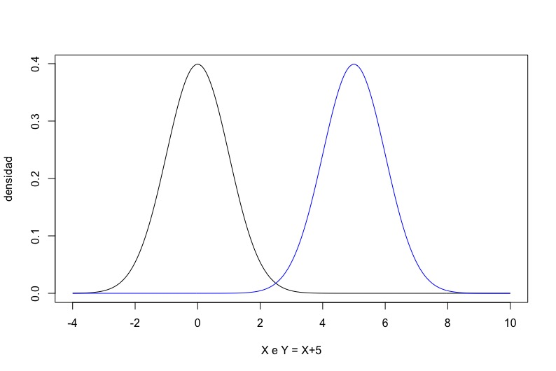
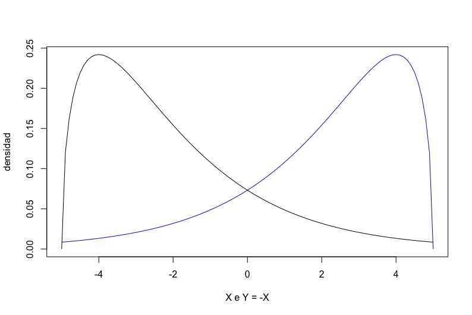
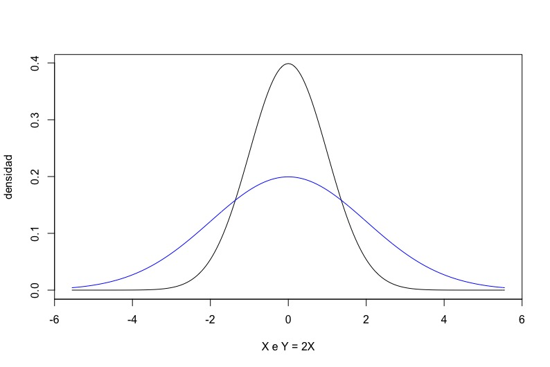

Capítulo 9 Esperanzas y desviaciones típicas de variables aleatorias
Cuando cogemos una muestra de una población podemos calcular la media y la desviación típica de la muestra. Esto nos da un idea de su valor central y de la dispersión. Esta es una información que también nos interesa de una distribución. En este documento vamos a ver cómo se calcula la “media” (más conocida como esperanza) y la desviación típica de una distribución, tanto si es discreta como si es continua.
Tiramos un dado 6 veces y nos sale 3, 6, 3, 4, 5 y 2. La media de esta muestra es 3,83. Como vimos en el documento de estadística descriptiva de datos numéricos, el valor de la media me da una medida de cuál es el “centro” de los datos, el valor alrededor del cuál se mueven. Esto es un concepto que también me interesa para una distribución. ¿Cuál es el valor “central” de una distribución? Una distribución es un “ideal” de una muestra. Si tuviéramos una muestra “perfecta” tendríamos cada valor en proporción exacta a su probabilidad de salir. Esto en el caso de los dados sería tirar los dados 6 veces y obtener un 1, un 2, un 3, un 4, un 5 y un 6; o tirar los dados 12 veces y obtener dos 1, dos 2, etc. La media de esta “muestra perfecta” es la esperanza o valor esperado de la distribución, o estrictamente hablando, la esperanza de una variable aleatoria distribuida uniformemente con valores de 1 a 6. Realmente es un nombre desafortunado: el valor esperado de tirar un dado es 3,5, que es un valor imposible. Pero bueno, aceptaremos el nombre.
Esta idea intuitiva nos da un método para calcular la esperanza: diseñamos una “muestra perfecta” y calculamos su media. Esto tiene dos problemas: es engorroso diseñar esta muestra perfecta, y es imposible si la variable aleatoria puede tomar infinitos valores.
Por lo tanto usamos otro método. Antes de tirar el dado tenemos una probabilidad de 1/6 de sacar un 1, una probabilidad de 1/6 de sacar un 2, …, una probabilidad de 1/6 de sacar un 6. La esperanza es la media ponderada de los valores que pueden salir, siendo las probabilidades los pesos con el que multiplicar los valores. Sea \(D\) la variable aleatoria de tirar un dado. Su esperanza \(E[D]\) es \[E[D] = \frac{1}{6}\, 1 + \frac{1}{6}\, 2 + \frac{1}{6}\, 3 + \frac{1}{6}\, 4 + \frac{1}{6}\, 5 + \frac{1}{6}\, 6 = \frac{1 + 2 + 3 +4+5+6}{6} = 3,5\]
Queda claro que en este caso esto corresponde a la media de nuestra “muestra perfecta”. No es difícil ver que esto es así siempre. Y este método me sirve incluso si la variable puede tomar infinitos valores. Recordemos el ejemplo de tirar una moneda hasta que nos saliera una cruz. Llamemos \(C\) a la variable aleatoria que es el número de caras que salen hasta que salga la primera cruz. Recordamos que la probabilidad de que \(C\) valga \(k\) (es decir su función de masa) era \(f(k) = 1/2^{k+1}\). Entonces la esperanza es \[E[C] = 0\,\frac{1}{2} + 1\,\frac{1}{4} + 2\,\frac{1}{8} +\cdots = \sum_{k = 0}^{\infty} k\,\frac{1}{2^{k+1}}\]
Por suerte esta serie infinita se sabe sumar. Su valor es \[E[C] = \frac{1 - \frac{1}{2}}{\frac{1}{2}} = 1.\]
Es decir que si nos ponemos a lanzar moneda hasta sacar una cruz podemos “esperar” ver sólo una cara antes de que llegue la cruz. O lo que es lo mismo, podemos esperar lanzar la moneda 2 veces. Naturalmente, la mitad de las veces nos pararemos a la primera tirada, y hay una probabilidad (infinitesimal) de sacar miles de caras antes de ver la primera cruz. Pero “de media” sacaremos sólo una cara.
Podemos generalizar este resultado para calcular la esperanza a partir de la función de masa. Sea una variable discreta \(X\) que tiene una función de masa \(f(k)\). Vamos a suponer que \(k\) varía de 0 a \(\infty\). La esperanza de la variable aleatoria es \[E[X] = \sum_{k = 0}^{\infty} k\, f(k).\]
En el caso de que la variable aleatoria sea continua, entonces el sumatorio se convierte en una integral: \[E[X] = \int_{-\infty}^{\infty} x\, f(x)\, dx.\]
Veamos una consecuencia, que es importante, de este resultado. Si sacamos una muestra de una distribución cada valor \(k\) aparecerá con probabilidad \(f(k)\). Si la muestra es grande, se parecerá a la “muestra perfecta” y la media de esa muestra se acercará a la esperanza de la distribución. En estadística esto generalmente se usa al revés: tenemos una distribución de la cuál no sabemos la esperanza, pero si obtenemos una muestra suficientemente grande, la media de la muestra nos dará una buena estima de la esperanza de la distribución.
9.1 Desviaciones típicas
De la misma manera que partimos de la idea de media de una muestra y la extendemos a esperanza de una variable aleatoria que sigue una determinada distribución, podemos partir de desviación típica de una muestra y extenderla a la desviación típica de una distribución. Ya en su momento no mostramos la fórmula para el cálculo de la desviación típica de una muestra y tampoco lo vamos a hacer aquí. Si tenemos una variable aleatoria que sigue una distribución discreta y finita, la idea de la “muestra perfecta” nos sigue sirviendo: la desviación de la variable es la de esta muestra. Si es discreta infinita o es continua, hay que aplicar las fórmulas correspondientes, que se pueden encontrar en cualquier libro o página web de estadistica.
Otra vez, al igual que en el caso de la esperanza, en estadística se suele usar la desviación típica de una muestra como estimador de la desviación típica de la distribución de donde hemos sacado la muestra.
9.2 Operaciones con variables aleatorias
El término «esperanza» y la notación \(E[X]\) pertenece al campo de la probabilidad. En estadística se tiene la tendencia a ser más concreto. En vez de pensar en una variable aleatoria en abstracto y su esperanza, se piensa en una población de interés y en su media. Por eso aunque cuando se tratan aspectos teóricos se habla de «esperanza» y se usa el \(E[X]\), cuando nos metemos en la práctica se habla de «media poblacional» y se escribe como \(\mu\) (pronunciado «mu»). En estadística las letras griegas son parámetros de la población, mientras que las letras latinas se refieren a las muestras.
En el caso de la desviación típica, la desviacion típica poblacional se simboliza con la letra griega sigma: \(\sigma\). Veamos el resultado de la esperanza, o media poblacional, y de la desviación típica, que tenemos si operamos variables aleatorias.
Lo primero que hay que tener muy claro es que sumar variables aleatorias no es lo mismo que sumar variables algebraicas. Por ejemplo, todos sabemos que en álgebra \(x + x= 2x\). Esto no pasa con variables aleatorias.
Supongamos dos juegos distintos. Uno es lanzar un dado dos veces. El otro es lanzar un dado y multiplicar lo que salga por 2. Llamemos \(D\) a la variable aleatoria de lanzar un dado. En el primer caso tenemos la variable aleatoria \(S = D + D\). En el segundo tenemos la variable aleatoria \(M = 2D\). Las variables (y los juegos) no son iguales. Es cierto que \(S\) y \(M\) van entre 2 y 12, pero por ejemplo la probabilidad de que \(S\) valga 3 es \(P[S = 3] = 2/36\) mientras que la probabilidad de que \(M\) valga 3 es \(P[M = 3] = 0.\) Son distribuciones diferentes y por lo tanto son variables aleatorias diferentes.
Como vemos en este ejemplo de los dados, es bastante habitual operar con variables aleatorias. Veamos cómo varían las medias poblacionales y las desviaciones típicas ante la suma de variables aleatorias entre sí y con constantes y la multiplicación de variables por constantes. No veremos el caso de multiplicación de variables aleatorias: es mucho más complejo y, por suerte, menos interesante.
Empecemos con un ejemplo. La longitud (en minutos) de las llamadas hechas en mi teléfono es una variable aleatoria \(T\): no sé de antemano cuánto durarán. Mi operadora me dice que el coste de la llamada es 0,10€ por establecimiento de llamada más 0,03€ por minuto. El coste \(C\) de la llamada es otra variable aleatoria (tampoco la conozco de antemano) que es \(C = 0.03 T + 0,10\).
Yo sé que mis llamadas siguen una cierta distribución (no importa cuál) y tiene una media poblacional (o esperanza) \(\mu_{T}\). Es fácil darse cuenta que la media poblacional del coste de las llamadas es \(\mu_{C} = 0.03 \mu_{T} + 0,10.\) Esto se puede generalizar —y demostrar rigurosamente— como la primera propiedad de las esperanzas (o medias poblacionales):
\[\mu_{aX + b} = a \mu_{X} + b.\]
Es decir que si sumamos una cantidad fija a una variable también hay que sumarla a la media poblacional. Y si multiplicamos una variable por una cantidad fija, también hay que multiplicar la media poblacional por esa cantidad.
Consideremos ahora un servidor web. Cuando le llega una petición para ver una página tarda un tiempo \(P\) en procesar la petición y un tiempo \(T\) en transmitir la página solicitada. Ambos tiempos son desconocidos a priori (es decir aleatorios). Siguen una cierta distribución y tienen unas medias poblacionales \(\mu_{P}\) y \(\mu_{T}\). El tiempo \(R\) necesario para responder a la petición es \(R = P + T\). Es fácil darse cuenta que la media poblacional de \(R\) es \(\mu_{R} = \mu_{P} + \mu_{T}\). Esto se puede generalizar —y demostrar rigurosamente— a la segunda propiedad de las esperanzas (o medias poblacionales):
\[\mu_{aX \pm bY} = a\mu_{X} \pm b \mu_{Y}.\]
En palabras: la media de una suma (o resta) es la suma (o resta) de las medias.
Veamos ahora las propiedades de la distribución típica. Lo haremos gráficamente. En la figura siguiente tenemos dos variables aleatorias.

Una es \(X\), cuya función de densidad se ha pintado en negro. Otra es \(Y = X + 5\), cuya función de densidad se ha pintado en azul. Recordemos que la desviación típica es una medida de cuánto se desvían los valores respecto a la media del conjunto. En el caso de \(Y\) todos los valores están desplazados 5 unidades. Y la media también. Por lo tanto el desvío respecto a la media de \(Y\) es el mismo que el desvío respecto a la media de \(X\). De aquí la primera propiedad de las desviaciones típicas:
\[\sigma_{X\pm a} = \sigma_{X}.\]
En la figura siguiente tenemos las densidades de dos variables, \(X\) e \(Y = -X\).

Una función es la imagen especular de la otra. Están giradas, pero son la misma forma. Por lo tanto las desviaciones respecto a las medias son las mismas, por lo tanto la desviación típica debe ser la misma. Es decir,
\[\sigma_{-X} = \sigma_{X}.\]
Consideremos ahora dos variables aleatorias: Una es \(X\) y la otra es \(Y = 2X\). La probabilidad que \(X\) esté entre, digamos \(-1\) y \(-1,1\) ha de ser igual a la probabilidad que \(Y\) esté entre \(-2\) y \(-2,2\). Esto obliga a la figura a extenderse y achatarse. Mostramos esto en la figura siguiente.

Todo está más alejado de la media y por lo tanto la desviación típica ha de crecer. Se puede demostrar que si doblamos el valor de la variable aleatoria, la desviación típica también se dobla. Unimos esto al resultado anterior, que multiplicar por \(-1\) no cambia la desviación típica, y tenemos que
\[\sigma_{aX} = |a| \sigma_{X}\]
Acabemos con el último resultado que nos interesa: el caso de la suma de dos variables aleatorias independientes, \(X +Y\). Si las variables no fuesen independientes, todo lo que sigue no se puede aplicar. En este caso gráficamente no se ve mucho y no mostramos ninguna figura. Queda claro que tenemos dos fuentes de variabilidad y es lógico pensar que la desviación típica será mayor que la de cualquiera de las dos variables. También es fácil darse cuenta que como \(X - Y = X + (-Y)\), y \(\sigma_{-Y} = \sigma_{Y}\), entonces \(\sigma_{X-Y} = \sigma_{X+Y}\). Se puede demostrar que
\[\sigma_{X\pm Y} = \sqrt{\sigma_{X}^{2} + \sigma_{Y}^{2}}.\]
Vuelvo a llamar la atención al hecho de que aunque las variables se resten, las desviaciones típicas se suman.
9.2.1 Un ejemplo
Tenemos un bazar de equipos electrónicos. Somos dos socios y lo tenemos montado de esta manera: Alberto compra los equipos y me los vende a un precio un 15% superior. Después yo los vendo a clientes y me quedo con el beneficio. El precio de compra es una variable aleatoria y el de venta también y son independientes porque ambos regateamos fuertemente con los clientes. Entre nosostros no regateamos. El precio de compra medio es de 89,73€ con una desviación típica de 7,35€ y el precio de venta medio es de 114,28€, con una desviación típica de 6,35€. ¿Cuál es mi beneficio medio?¿Qué desviación típica tiene?
Llamemos \(C\) al precio por el que Alberto compra los equipos, \(V\) al precio por el que yo los vendo y \(B\) a mi beneficio. Entonces \[B = V - 1,15 C.\]
El valor esperado del beneficio es
\[\mu_{B} = \mu_{V - 1,15 C} = \mu_{V} - 1,15 \mu_{C} = 114,28 - 1,15 \cdot 89,73 = 11,09\mbox{ \euro}\]
La desviación típica sería
\[\sigma_{B} = \sigma_{V - 1,15 C} = \sqrt{\sigma_{V}^{2} + \sigma_{1,15C}^{2}} = \sqrt{\sigma_{V}^{2} + (1,15\,\sigma_{C})^{2}} = \sqrt{7,35^{2} + (1,15 \cdot 6,35)^{2}} = 10,36\mbox{ \euro}\]
La desviación típica es casi tan grande como la media. Esto quiere decir que aunque de media gane, en muchas ventas tendré pérdidas.
En vista de esto le propongo a Alberto un cambio en nuestra forma de hacer negocios: Yo le daré 13,50€ por compra, independientemente de cuánto cueste. Esto es un poquito más de lo que él recibe de media, por lo tanto sale ganando. Lo acepta. Con este nuevo arreglo, mi beneficio es: \[B = V - C - 13,50.\]
y el valor esperado queda: \[\mu_{B} = \mu_{V - C - 13,50} = \mu_{V} - \mu_{C} - 13,50 = 114,28 - 89,73 - 13,50 = 11,05\mbox{ \euro}.\]
Un poquito menos. Pero la desviacion típica es: \[\sigma_{B} = \sigma_{V - C - 13,50} = \sqrt{\sigma_{V}^{2} + \sigma_{C}^{2}} = \sqrt{7,35^{2} + 6,35^{2}} = 9,71\mbox{ \euro}\]
De media no gano tanto pero la variabilidad ha bajado. Menos sobresaltos al final del día.
9.3 Resumen
De la misma manera que una muestra tiene una media y una desviación típica, una distribución también la tiene (o para ser preciso, una variable aleatoria que sigue una distribución). A la “media” de la distribución se le llama _esperanza} (en probabilidad) o _media poblacional} (en estadística). Si la distribución es discreta y finita, la esperanza y la desviacion típica serían aquellas que corresponden a una muestra “perfecta” aquella en la que cada valor de la muestra sale en una proporción que corresponde exactamente a su probabilidad. Si la distribución es discreta infinita o continua, hay fórmulas que permiten calcular estos valores. En particular para la esperanza tenemos: \[E[X] = \sum_{k = 0}^{\infty} k\, f(k).\] en el caso discreto y \[E[X] = \int_{-\infty}^{\infty} x\, f(x)\, dx.\] para el continuo.
A menudo tenemos que multiplicar una variable aleatoria por un factor o sumar variables aleatorias. En el caso de sumar o multiplicar constantes por una variables tenemos:
\[\mu_{aX + b} = a \mu_{X} + b.\]
Y la suma de variables es: \[\mu_{aX \pm bY} = a\mu_{X} \pm b \mu_{Y}.\]
Para el cálculo de la desviación típica, la suma de una constante a una variable no cambia la desviación típica:
\[\sigma_{X\pm a} = \sigma_{X}.\]
Pero si la multiplicamos, sí: \[\sigma_{aX} = |a| \sigma_{X}\]
Tanto si sumamos como si restamos variables aleatorias, la desviación aumenta:
\[\sigma_{X\pm Y} = \sqrt{\sigma_{X}^{2} + \sigma_{Y}^{2}}.\]